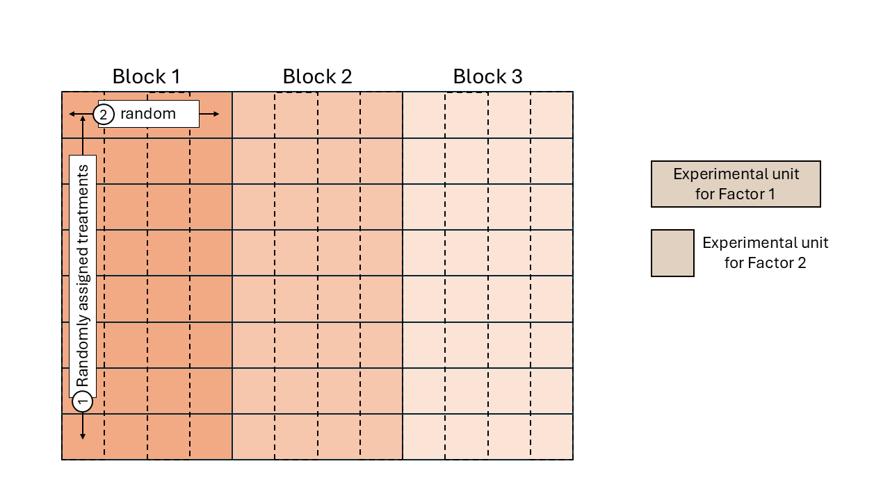

Day 3 Designed Experiments Review
September 3rd
3.1 Announcements
- Assignment 1 is due today!
- Applied Linear Mixed Models Workshop 09/13-09/14
3.2 Designed experiments
Let’s review the basics of designed experiments:
- Research question
- Planning the experiment
- Treatment structure
- Design structure
3.2.1 Design structures
While the treatment structure defines what effects we will try and estimate as precisely as possible, the design structure tells us the story of how those treatments were applied. The main objective of Some of the most common designed experiments include
- completely randomized design (CRD),
- randomized complete block design (RCBD),
- split-plot design,
- variations like
- generalized randomized complete block design,
- strip-plot design,
- repeated measures designs.

Figure 3.1: Schematic description of an experiment with a completely randomized design

Figure 3.2: Schematic description of an experiment with a randomized complete block design

Figure 3.3: Schematic description of a field experiment with a split-plot design